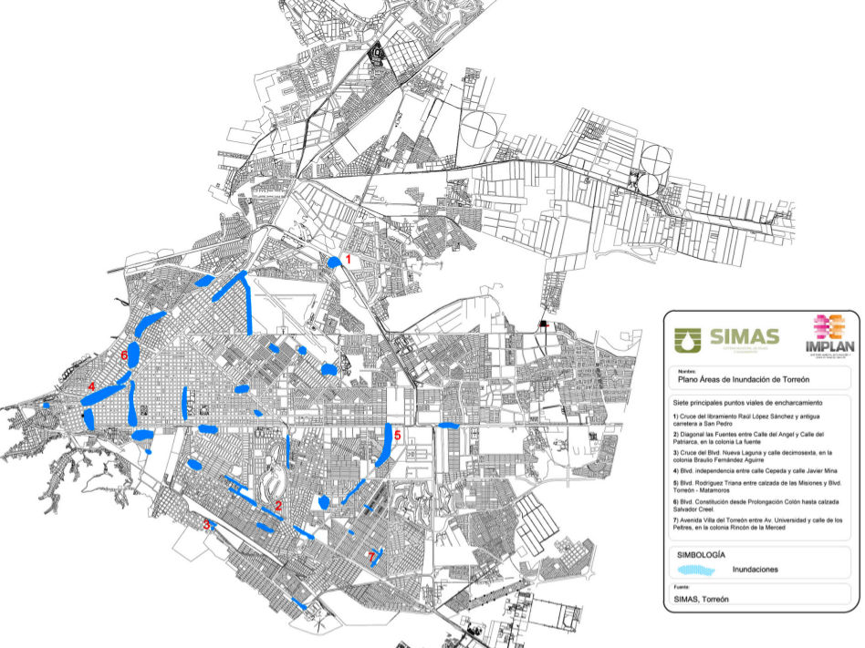
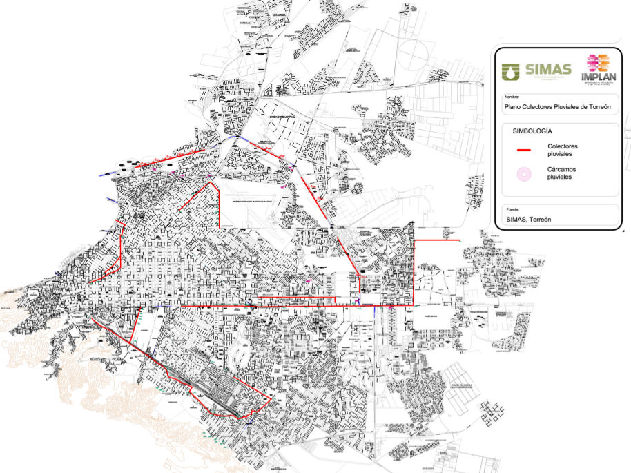

Presentación
Instrucciones: Cada 12 segundos cambia la imagen. Puede arrastrar a la izquierda para avanzar y a la derecha para retroceder.


Plan Estratégico Metropolitano
Desde OCTUBRE de 2014 más de 264
- Expertos
- Servidores Públicos
- Representantes Gremiales
- Ambientalistas
- ONG’s
- Especialistas
- Universidades
- Empresarios
- Técnicos
- Ciudadanos Diversos
Alrededor de 20 hrs. de Trabajo
La mesa de Entorno Urbano se encargó de discutir, entre otros temas, la problemática concerniente a infraestructura y servicios urbanos.
De esta manera se planteó el futuro deseado en materia urbana, así como los objetivos y metas para llegar a esta visión, así como sus estrategias y acciones prioritarias entre las que destaca el proyecto de aguas pluviales que se orienta principalmente a atender el problema de los encharcamientos pro ducto de las lluvias veraniegas.
Objetivos del Comité Técnico
El Comité Técnico se trazó tres objetivos básicos alrededor de los cualesgiró el trabajo del mismo:
- Obtener un diagnóstico del drenaje pluvial existente.
- Identificar y evaluar las propuestas de solución.
- Elaborar un marco de referencia para definir los lineamientos del Plan Estratégico para el Manejo Integral del Aguas Pluviales (PEMIAP).
Las múltiples administraciones municipales han atendido el problema pluvial de manera parcial conforme ha ido creciendo la ciudad. La desaparición de los tres principales tajos para dar lugar a modernos bulevares agravó el problema de los encharcamientos y, en la medida que la ciudad creció, las alternativas de solución se dificultaron.
No obstante lo anterior, el Sistema Municipal de Aguas y Saneamiento de Torreón, SIMAS, tiene registrados...
Diagnóstico
- La precipitación pluvial promedio de los últimos 40 años es de 227 mm por año
- Máximos de 504 mm en el año de 1986
- 396 mm en el año 1990.
- En promedio, los meses de Mayo a
- Septiembre concentran el 76% de la precipitación anual
- El resto del año las lluvias ocasionales no representan mayor riesgo de encharcamientos.
- Las lluvias veraniegas en Torreón son torrencial, de alta intensidad y de relativamente poca duración.
Presipitación Máxima Mensual y Diaria
La topografía plana de la es la causa básica de los encharcamientos que ocurren, cuando las lluvias son excesivas o de alta intensidad.
Ante la limitada existencia de drenes naturales o construidos para el escurrimiento pluvial.
| Precipitación(mm) | Mayo 1992 | Junio 1999 | Julio 1990 | Agosto 1998 | Septiembre 1995 |
|---|---|---|---|---|---|
| Max. Mensual | 110 | 146 | 119 | 218 | 158 |
| Max. Diaria | 93 | 55 | 51 | 102 | 99 |
| Anual | 251 | 210 | 396 | 284 | 248 |
| % Diaria-Mensual | 84% | 38% | 43% | 47% | 63% |
| %Mes-Anual | 44% | 70% | 30% | 77% | 64% |
Problemática Territorial de Encharcamiento

Problemática Territorial
Los 7 principales puntos viales de encharcamiento en Torreón
- Cruce del libramiento Raúl López Sánchez y antigua carretera a San Pedro.
- Diagonal las Fuentes entre Calle del Ángel y Calle del Patriarca, en la colonia La Fuente
- Cruce del Blvd. Nueva Laguna y calle decimosexta, en la colonia Braulio Fernández Aguirre.
- Blvd. Independencia entre calle Cepeda y calle Javier Mina.
- Blvd. Rodríguez Triana entre calzada de las Misiones y Blvd. Torreón - Matamoros.
- Blvd. Constitución desde Prolongación Colón hasta calzada Salvador Creel.
- Avenida Villa del Torreón entre Av. Universidad y calle de los Peltres, en la colonia Rincón de la Merced.
Colectores Pluviales

El Sistema Municipal de Aguas y Saneamiento de Torreón cuenta con un registro de 17 Sistemas de Captación y 10 Colectores Pluviales con diversos estados de mantenimiento.
Problemática Jurídica
- La legislación estatal y municipal en materia de aguas pluviales es muy limitada.
- La Ley de Asentamientos Humanos y Desarrollo Urbano para el Estado de Coahuila ni los Reglamentos de Construcción del Municipio de Torreón establecen normas y disposiciones específicas que deben cumplir los diversos actores del desarrollo urbano e inmobiliario para lograr una captación y conducción ordenada de las aguas pluviales hacia puntos de descarga establecidos.
En su sesión del mes de agosto del 2015, el Consejo Directivo del IMPLAN aprobó el proyecto de Reglamento de Zonificación y Usos de Suelo, el cual incluye por primera vez en la historia reglamentaria en materia urbana de Torreón y del mismo estado de Coahuila, una propuesta de reglamentación puntual y sistemática. (Pendiente su aprobación por el H. Cabildo de Torreón).
Problemática Institucional
- Falta de reglamentación, hoy en día no existe autoridad municipal que tenga a su cargo la operación, mantenimiento y administración de la totalidad de las redes pluviales existentes.
- Algunas redes están bajo la responsabilidad del SIMAS, otras tantas son mantenidas por la Dirección de Obras Públicas del municipio y algunas más están abandonadas sin que autoridad alguna se encargue de ellas.
- A consecuencia de tal vacío de autoridad, el estado físico en que se encuentran esas redes es deficiente.
Torreón debe contar con una dependencia u órgano especializado que tenga bajo su responsabilidad no sólo la operación del sistema de aguas pluviales de la ciudad, sino al mismo tiempo la ejecución de un Plan Estratégico para el Manejo Integral del Drenaje Pluvial (PEMIDP).
Lineamientos
El PEMIDP será el instrumento estratégico de la Administración Municipal para que, a través de una dependencia u organismo público municipal, pueda llevar a cabo las acciones y programas necesarios que permitan el cumplimiento de metas y objetivos a corto, mediano y largo plazo.
El PEMIDP contará con:
- Objetivo del Plan. Administrar de manera integral y eficiente los escurrimientos pluviales que se generan en la ciudad de Torreón, buscando el mayor aprovechamiento del agua para fines de riego de áreas verdes o forestadas y para la posible recarga del acuífero, al mismo tiempo de prevenir y mitigar los efectos nocivos de las lluvias extraordinarias que periódicamente afectan la ciudad.LINEAMIENTOS
- Programas Estratégicos:
- Inventario de redes pluviales existentes, en funcio namiento o desactivadas, indicando equipamiento, capacidad, tipo y longitud de redes, puntos de captación y puntos de descarga, así como el presupuesto para su puesta en marcha y operación eficiente.
- Construcción y rehabilitación de canales de desagüe pluvial e incorporación de canales a cargo de CONAGUA al sistema de desagüe pluvial.
- Solución integral de los 7 puntos citadinos más afectados por los encharcamientos
- Vecinos en acción. Promover la participación activa de la ciudadanía organizada por barrios y colonias para proponer soluciones prácticas y de bajo costo en materia de encharcamientos.
Conclusiones
En concordancia con la recomendación de la actualización de 2013 del Plan Director de Desarrollo Urbano de Torreón, en el sentido de designar una agencia, organismo o dependencia responsable de la planeación, ejecución, operación, mantenimiento y control del sistema integral de aguas pluviales, se considera que el Sistema Municipal de Aguas y Saneamiento de Torreón debe asumir esa responsabilidad.
Tanto la experiencia técnica del personal del SIMAS, como las economías de escala que sus activos fijos otorgan para la operación a un bajo costo marginal del conjunto de redes pluviales, hace del SIMAS el organismo público más idóneo para tomar bajo su mando y responsabilidad el PEMIDP y, por su puesto, el mantenimiento y operación del sistema de redes pluviales.
La inversión en materia de nueva infraestructura pluvial seguiría corriendo por cuenta del presupuesto de Obras Públicas del Municipio, pero la operación y mantenimiento estaría bajo la responsabilidad del SIMAS.